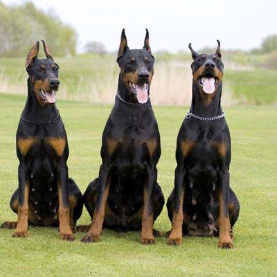

Доберманът води началото си от Германия, където неговият създател Луис Доберман, нощен пазач, искал куче-пазач, което да му помага в работата.
Смята се, че размерът на Доберманът е постигнат чрез примеси на ротвайлер и немски дог. Скоростта му пък се дължала на ДНК-та на грейхаундите. Първата порода Доберман била регистрирана в Немската родословна книга през 1893 г.
Доберманът води началото си от Германия, където неговият създател Луис Доберман, нощен пазач, искал куче-пазач, което да му помага в работата
Смята се, че размерът на Доберманът е постигнат чрез примеси на ротвайлер и немски дог. Скоростта му пък се дължала на ДНК-та на грейхаундите. Първата порода Доберман била регистрирана в Немската родословна книга през 1893 г.
Безразборното развъждане през годините е довело до променливото настроение и характер на тази порода. Това се отразява и в обучението Добермана. Някои се тренират добре и научават нови задачи лесно и дружелюбно, докато други са упорити и твърдоглави. Независимо от индивида, всички Добермани трябва да бъдат обучавани последователно, настойчиво, но по нежен начин. Тези кучета не реагират добре на агресивно или грубо третитране.
Ако решите да осиновите Доберман от приют, е важно е да знаете историята и психическото здраве на кучето, п
реди да го доведете у дома.
Ако сте решили да закупите Доберман, проучете добре развъдника, от който кучето произлиза и огледайте всички кучета там.
Ако добреманите преследват опашките си в клетките си, илк лаят неконтролируемо, това може да е знак, че те страдат от
силно безпокойство,
което може да е породено от безразборно развъждане.
Разбере ли веднъж Доберманът мястото си в “глутницата”, той се превръща в лоялен и интелигентен приятел.
Желанието му да работи успоредно с хората, способността му да се ориентира добре и заплашителната му фигура е това,
което го прави отлично полицейско куче в продължение на много години.